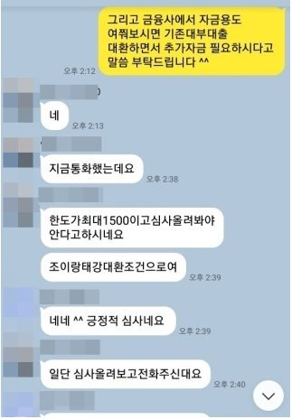
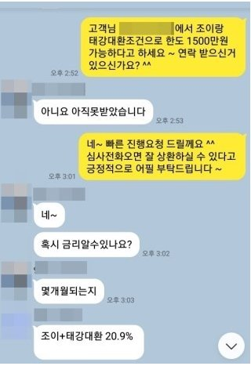

개인회생 완납 직장인 기존고금리 대환및 추가자금 성공사례!!!
안녕하세요~ 오늘은 제가 상담 진행해드린 양**고객님의 대출 사례를 안내해
드리겠습니다. 양** 고객님께서는 개인회생 변제금을 완납한지 얼마안된 상황이였고, 4대보험이
가입되어 있는 직장인이셨으며, 월소득은 325만원 정도 되셨습니다. 기존 대출은 조이크레디트
961만원, 태강대부 400만원, 옐로우 500만원+300만원, 키움저축 76만원 이용 중이셔서 좀 더
낮은 금리로 대환을 원하셨고, 최근에 대출 받은지 얼마 되지 않으셔서 다른곳에서 진행을
해보았지만 잦은 부결로 힘들어 하셨습니다. 저는 충분한 상담 후 개인회생 완납자
대출로 진행해 드렸고, 그 결과 기존 대출보다 낮은 금리로 일부 대환 하셔서 매우 만족해
하셨습니다. 아래는 저와 양**고객님의 카톡상담 내용 일부를 캡쳐한 것이오니,
참고하시어 많은 도움 되셨으면 좋겠습니다. 감사합니다.^^

